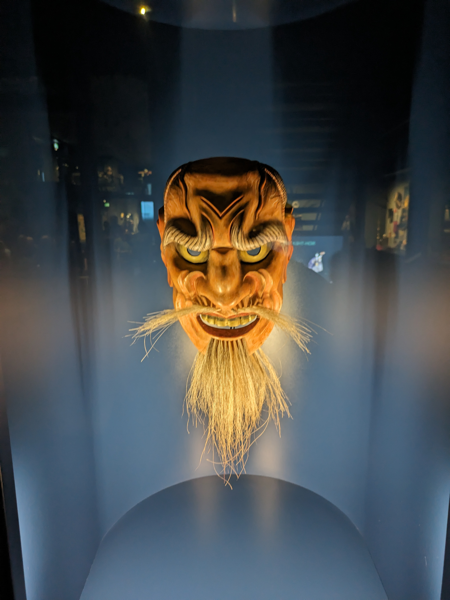

<div class="flex flex-col min-h-screen">
  <!-- Main content -->
  <div class="flex-grow">
    <!-- Hero Section -->
    <section class="bg-gray-200 text-center py-20">
      <h2 class="text-4xl font-bold mb-4">Explore the World with Me!</h2>
      <p class="text-xl mb-4">
        Join me on my journey and discover amazing places.
      </p>
      <div class="mx-auto w-1/2 lg:w-1/6 mb-6">
        <p-galleria
          [(value)]="images"
          [numVisible]="5"
          [circular]="true"
          [showItemNavigators]="true"
          [showThumbnails]="false"
          [responsiveOptions]="responsiveOptions"
          [containerStyle]="{ 'max-width': '768px' }"
        >
          <ng-template pTemplate="item" let-item>
            
          </ng-template>
        </p-galleria>
      </div>
      <a
        href="/blog"
        class="bg-blue-600 text-white px-6 py-2 rounded hover:bg-blue-700"
        >My Experiences</a
      >
    </section>

    <!-- About Section -->
    <section class="container mx-auto my-20 px-4">
      <h3 class="text-3xl font-bold mb-6">About</h3>
      <p class="text-lg mb-6">
        I'm a passionate traveler who loves to explore new places, meet new
        people, and share my experiences with the world. The blog is a
        collection of my adventures, tips, and stories from the road.
      </p>
      <a href="/mystory" class="text-blue-600 hover:underline"
        >Learn more about me</a
      >
    </section>

    <section class="container mx-auto my-20 px-4 text-center flex flex-col items-center justify-center">
      <h3 class="text-3xl font-bold mb-6">Photo of the Month</h3>
      <a href="/pictures/Samurai%20Museum">
      <div class="mb-3 image-container">
        
      </div>
    </a>
    <p class="text-lg mb-6">
      This mask, intricately crafted in the 19th to 20th century, represents the revered god of good fortune. Meticulously carved from cypress wood, it is adorned with a rich palette derived from minerals and seashell pigments. The mask not only stands as a testament to the artistic prowess of its creator but also embodies the cultural significance and reverence for prosperity and well-being.
    </p>
   </section>

    <section class="container mx-auto my-20 px-4 text-center flex flex-col items-center justify-center">
      <h3 class="text-3xl font-bold mb-6 text-center">Follow Me</h3>
      <!-- Add social media icons and links here -->
      <a href="https://www.strava.com/athletes/48812327" target="_blank" rel="noopener noreferrer">
      <fa-icon [icon]="['fab', 'strava']" class="bigger-size"></fa-icon> Follow me on Strava
    </a>
    <div>
    <a href="https://www.instagram.com/mapacherama/" target="_blank" rel="noopener noreferrer">
      <fa-icon [icon]="['fab', 'instagram']" class="bigger-size"></fa-icon> Follow me on Instagram
    </a>
  </div>
   </section>
   <section class="bg-gray-100 py-20">
    <h3 class="text-3xl font-bold mb-6 text-center">Got Questions?</h3>
    <p class="text-lg mb-6 text-center">Feel free to reach out. I'd love to hear from you!</p>
    <div class="text-center">
       <a href="/contact" class="bg-blue-600 text-white px-6 py-2 rounded hover:bg-blue-700">Contact Me</a>
    </div>
 </section>
  </div>
</div>
